Peliculas
Castle in the Sky
Hayao Miyazaki
Isao Takahata
The orphan Sheeta inherited a mysterious crystal that links her to the mythical sky-kingdom of Laputa. With the help of resourceful Pazu and a rollicking band of sky pirates, she makes her way to the ruins of the once-great civilization. Sheeta and Pazu must outwit the evil Muska, who plans to use Laputa's science to make himself ruler of the world.
1986
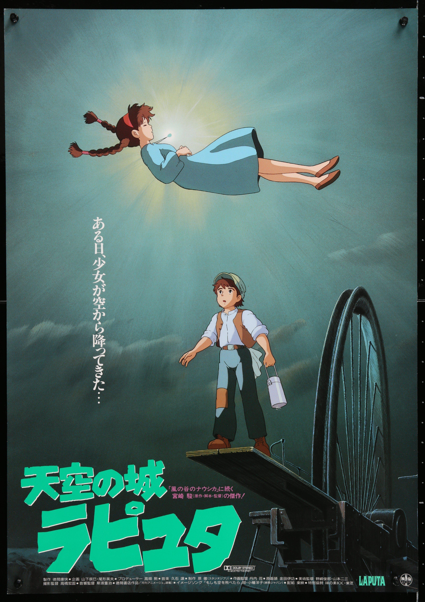
Grave of the Fireflies
Isao Takahata
Toru Hara
In the latter part of World War II, a boy and his sister, orphaned when their mother is killed in the firebombing of Tokyo, are left to survive on their own in what remains of civilian life in Japan. The plot follows this boy and his sister as they do their best to survive in the Japanese countryside, battling hunger, prejudice, and pride in their own quiet, personal battle.
1988

My Neighbor Totoro
Hayao Miyazaki
Hayao Miyazaki
Two sisters move to the country with their father in order to be closer to their hospitalized mother, and discover the surrounding trees are inhabited by Totoros, magical spirits of the forest. When the youngest runs away from home, the older sister seeks help from the spirits to find her.
1988
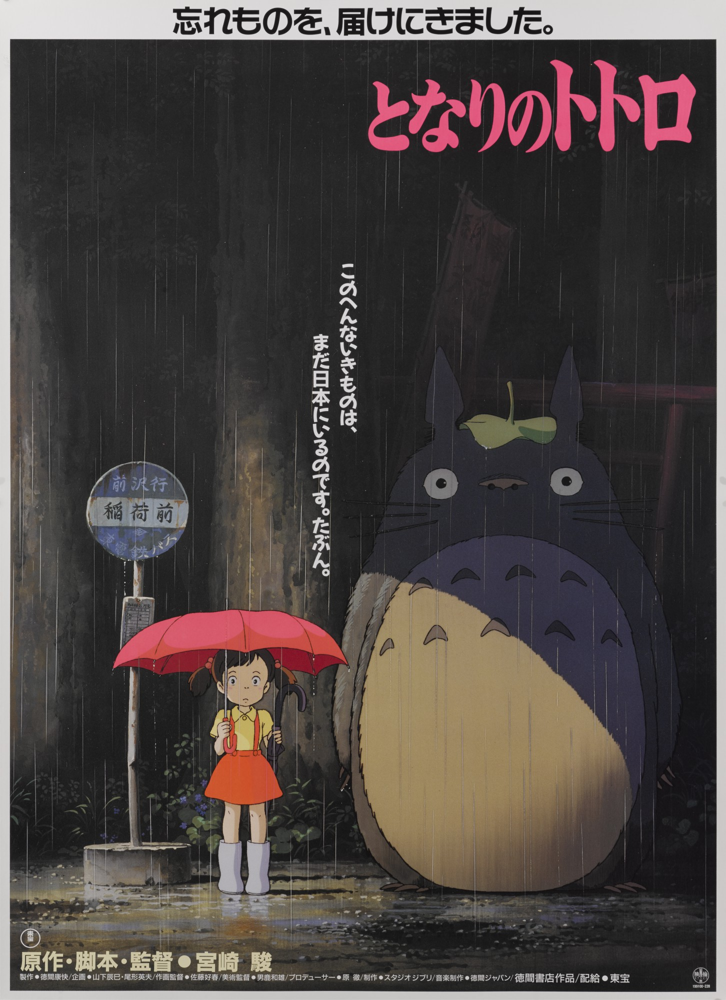
Kiki's Delivery Service
Hayao Miyazaki
Hayao Miyazaki
A young witch, on her mandatory year of independent life, finds fitting into a new community difficult while she supports herself by running an air courier service.
1989

Only Yesterday
Isao Takahata
Toshio Suzuki
It’s 1982, and Taeko is 27 years old, unmarried, and has lived her whole life in Tokyo. She decides to visit her family in the countryside, and as the train travels through the night, memories flood back of her younger years: the first immature stirrings of romance, the onset of puberty, and the frustrations of math and boys. At the station she is met by young farmer Toshio, and the encounters with him begin to reconnect her to forgotten longings. In lyrical switches between the present and the past, Taeko contemplates the arc of her life, and wonders if she has been true to the dreams of her childhood self.
1991
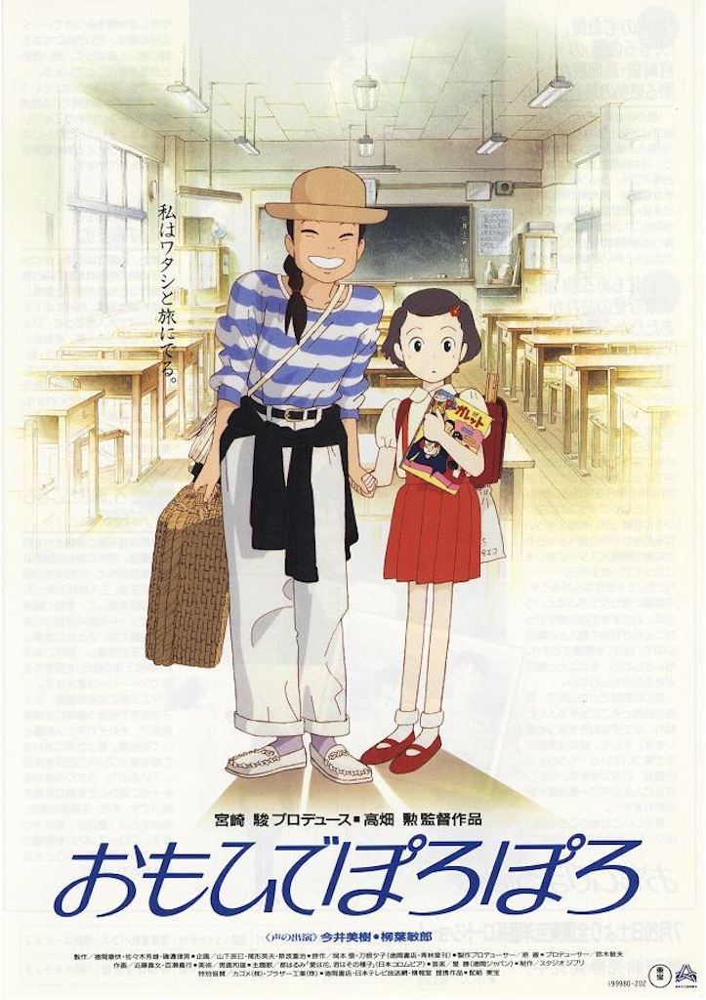
Porco Rosso
Hayao Miyazaki
Toshio Suzuki
Porco Rosso, known in Japan as Crimson Pig (Kurenai no Buta) is the sixth animated film by Hayao Miyazaki and released in 1992. You're introduced to an Italian World War I fighter ace, now living as a freelance bounty hunter chasing 'air pirates' in the Adriatic Sea. He has been given a curse that changed his head to that of a pig. Once called Marco Pagot, he is now known to the world as 'Porco Rosso', Italian for 'Red Pig.'
1992
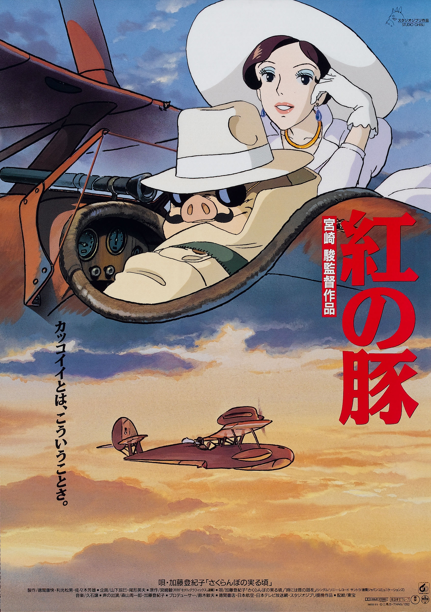
Pom Poko
Isao Takahata
Toshio Suzuki
As the human city development encroaches on the raccoon population's forest and meadow habitat, the raccoons find themselves faced with the very real possibility of extinction. In response, the raccoons engage in a desperate struggle to stop the construction and preserve their home.
1994
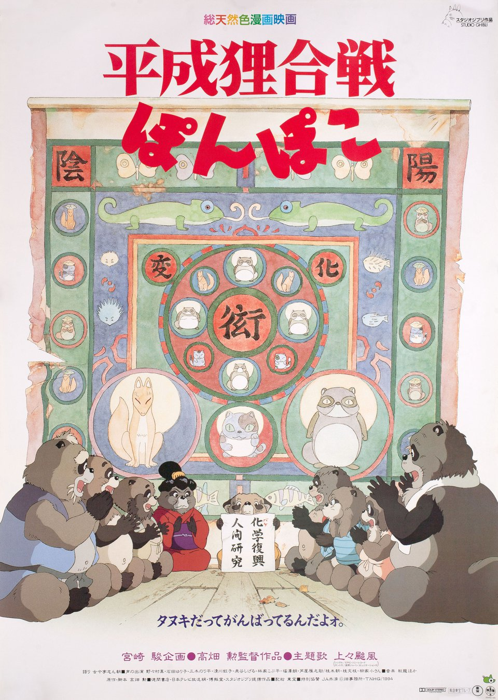
Whisper of the Heart
Yoshifumi Kondō
Toshio Suzuki
Shizuku lives a simple life, dominated by her love for stories and writing. One day she notices that all the library books she has have been previously checked out by the same person: 'Seiji Amasawa'. Curious as to who he is, Shizuku meets a boy her age whom she finds infuriating, but discovers to her shock that he is her 'Prince of Books'. As she grows closer to him, she realises that he merely read all those books to bring himself closer to her. The boy Seiji aspires to be a violin maker in Italy, and it is his dreams that make Shizuku realise that she has no clear path for her life. Knowing that her strength lies in writing, she tests her talents by writing a story about Baron, a cat statuette belonging to Seiji's grandfather.
1995
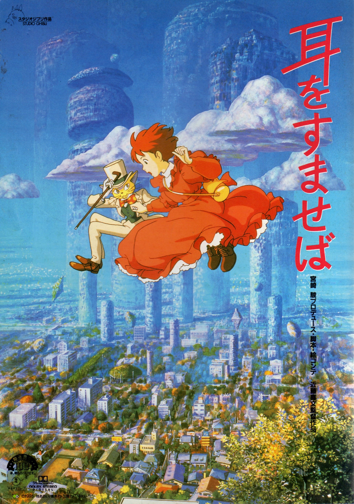
Princess Mononoke
Hayao Miyazaki
Toshio Suzuki
Ashitaka, a prince of the disappearing Ainu tribe, is cursed by a demonized boar god and must journey to the west to find a cure. Along the way, he encounters San, a young human woman fighting to protect the forest, and Lady Eboshi, who is trying to destroy it. Ashitaka must find a way to bring balance to this conflict.
1997
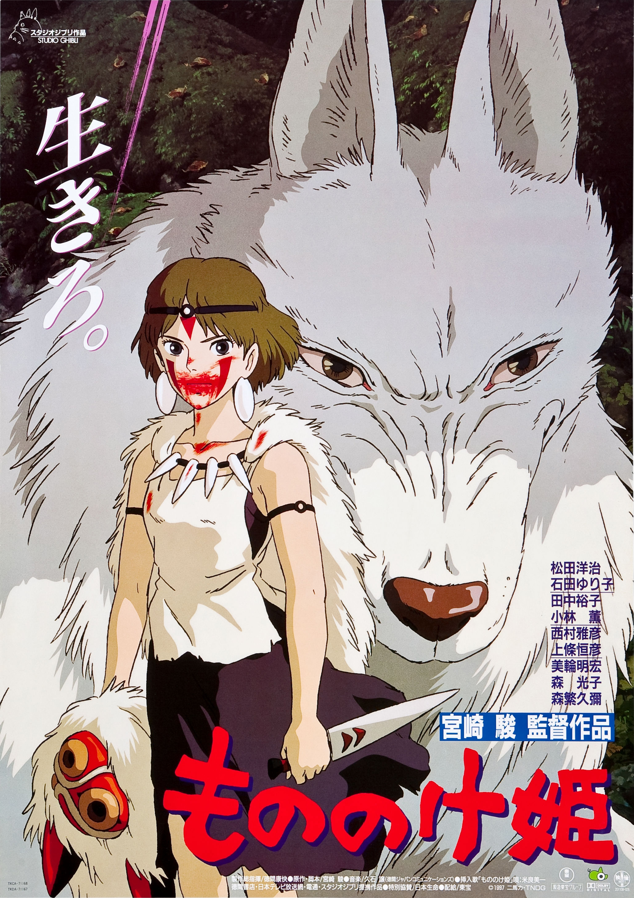
My Neighbors the Yamadas
Isao Takahata
Toshio Suzuki
The Yamadas are a typical middle class Japanese family in urban Tokyo and this film shows us a variety of episodes of their lives. With tales that range from the humourous to the heartbreaking, we see this family cope with life's little conflicts, problems and joys in their own way.
1999
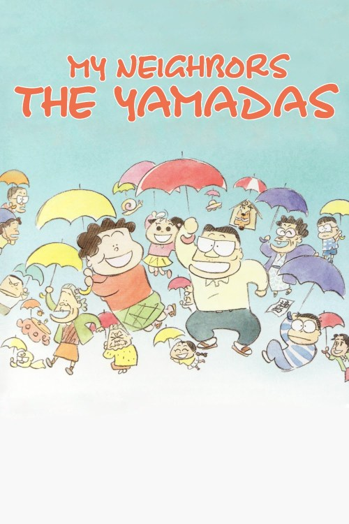
Spirited Away
Hayao Miyazaki
Toshio Suzuki
Spirited Away is an Oscar winning Japanese animated film about a ten year old girl who wanders away from her parents along a path that leads to a world ruled by strange and unusual monster-like animals. Her parents have been changed into pigs along with others inside a bathhouse full of these creatures. Will she ever see the world how it once was?
2001
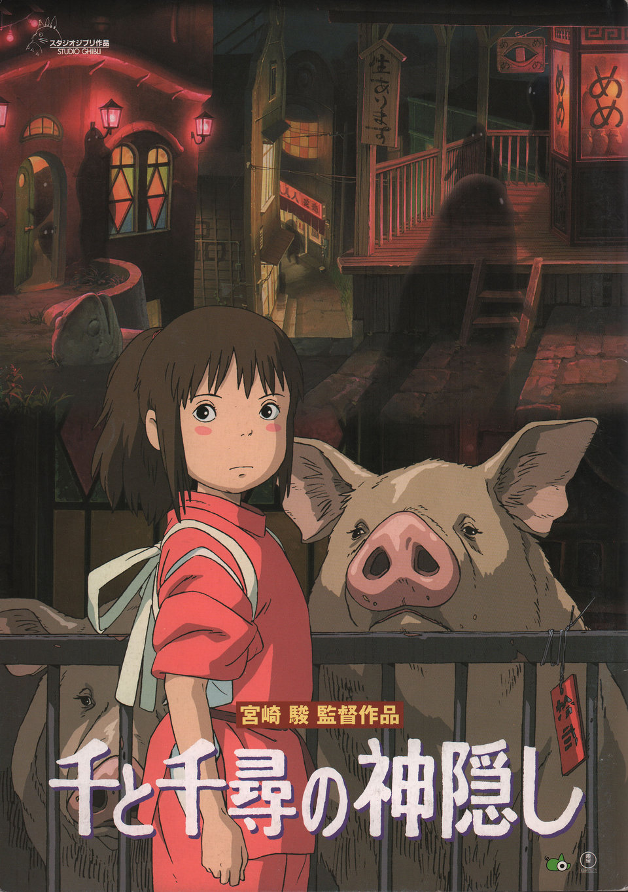
The Cat Returns
Hiroyuki Morita
Toshio Suzuki
Haru, a schoolgirl bored by her ordinary routine, saves the life of an unusual cat and suddenly her world is transformed beyond anything she ever imagined. The Cat King rewards her good deed with a flurry of presents, including a very shocking proposal of marriage to his son! Haru embarks on an unexpected journey to the Kingdom of Cats where her eyes are opened to a whole other world.
2002
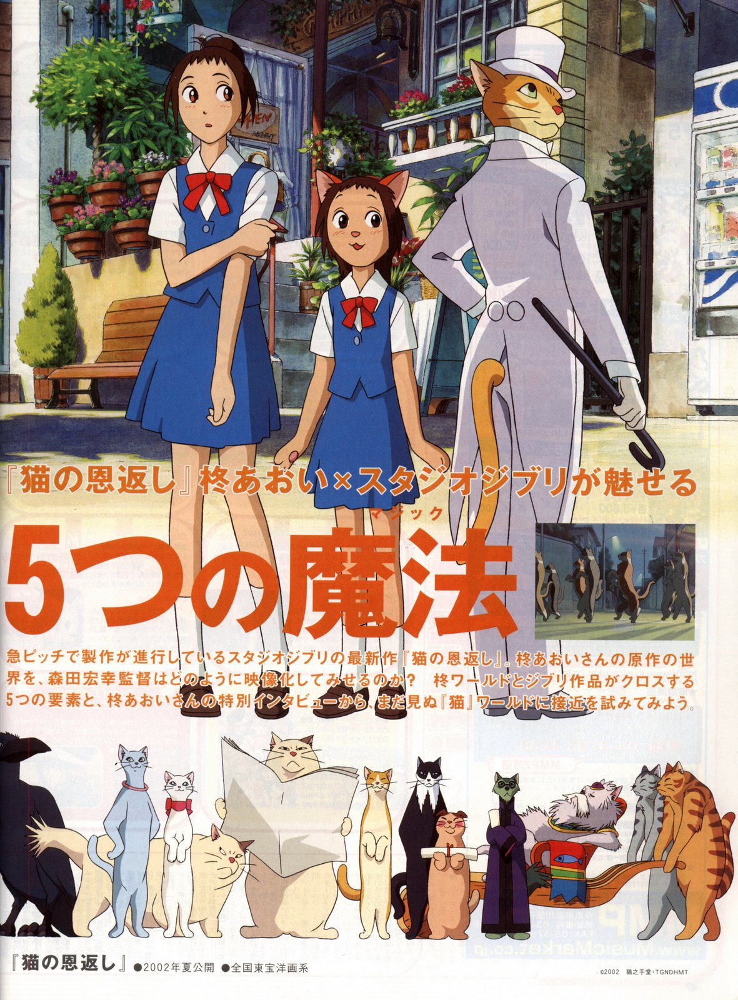
Howl's Moving Castle
Hayao Miyazaki
Toshio Suzuki
When Sophie, a shy young woman, is cursed with an old body by a spiteful witch, her only chance of breaking the spell lies with a self-indulgent yet insecure young wizard and his companions in his legged, walking home.
2004
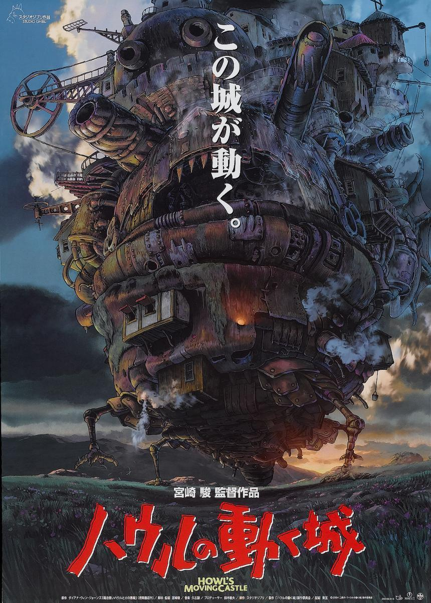
Tales from Earthsea
Gorō Miyazaki
Toshio Suzuki
Something bizarre has come over the land. The kingdom is deteriorating. People are beginning to act strange... What's even more strange is that people are beginning to see dragons, which shouldn't enter the world of humans. Due to all these bizarre events, Ged, a wandering wizard, is investigating the cause. During his journey, he meets Prince Arren, a young distraught teenage boy. While Arren may look like a shy young teen, he has a severe dark side, which grants him strength, hatred, ruthlessness and has no mercy, especially when it comes to protecting Teru. For the witch Kumo this is a perfect opportunity. She can use the boy's 'fears' against the very one who would help him, Ged.
2006
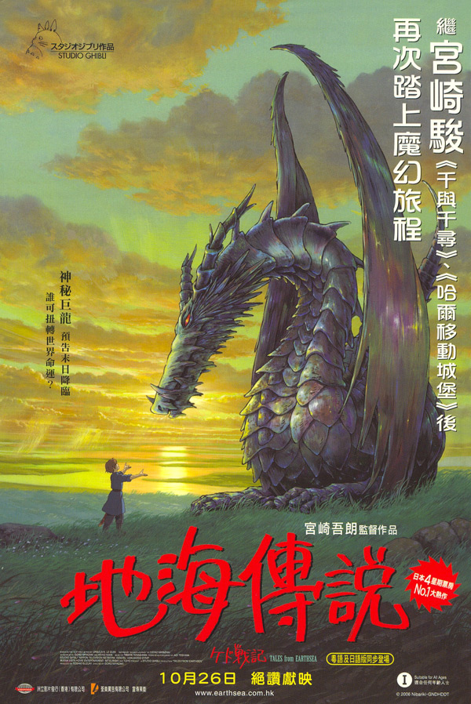
Ponyo
Hayao Miyazaki
Toshio Suzuki
The son of a sailor, 5-year old Sosuke lives a quiet life on an oceanside cliff with his mother Lisa. One fateful day, he finds a beautiful goldfish trapped in a bottle on the beach and upon rescuing her, names her Ponyo. But she is no ordinary goldfish. The daughter of a masterful wizard and a sea goddess, Ponyo uses her father's magic to transform herself into a young girl and quickly falls in love with Sosuke, but the use of such powerful sorcery causes a dangerous imbalance in the world. As the moon steadily draws nearer to the earth and Ponyo's father sends the ocean's mighty waves to find his daughter, the two children embark on an adventure of a lifetime to save the world and fulfill Ponyo's dreams of becoming human.
2008
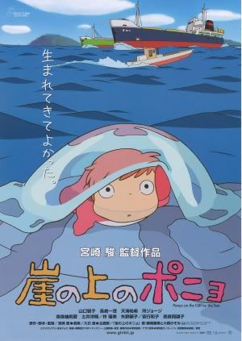
Arriety
Hiromasa Yonebayashi
Toshio Suzuki
14-year-old Arrietty and the rest of the Clock family live in peaceful anonymity as they make their own home from items 'borrowed' from the house's human inhabitants. However, life changes for the Clocks when a human boy discovers Arrietty.
2010
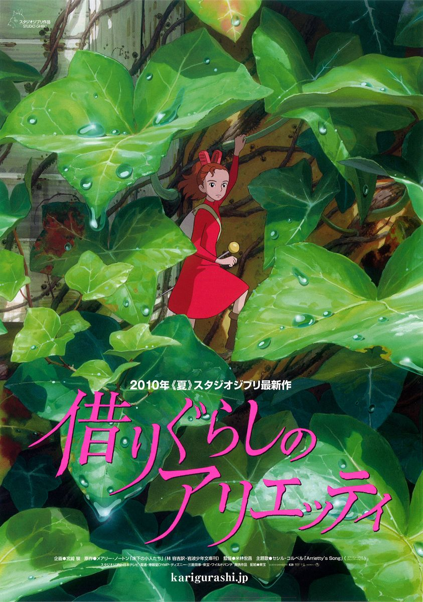
From Up on Poppy Hill
Gorō Miyazaki
Toshio Suzuki
The story is set in 1963 in Yokohama. Kokuriko Manor sits on a hill overlooking the harbour. A 16 year-old girl, Umi, lives in that house. Every morning she raises a signal flag facing the sea. The flag means “I pray for safe voyages”. A 17 year-old boy, Shun, always sees this flag from the sea as he rides a tugboat to school. Gradually the pair are drawn to each other but they are faced with a sudden trial. Even so, they keep going without running from facing the hardships of reality.
2011
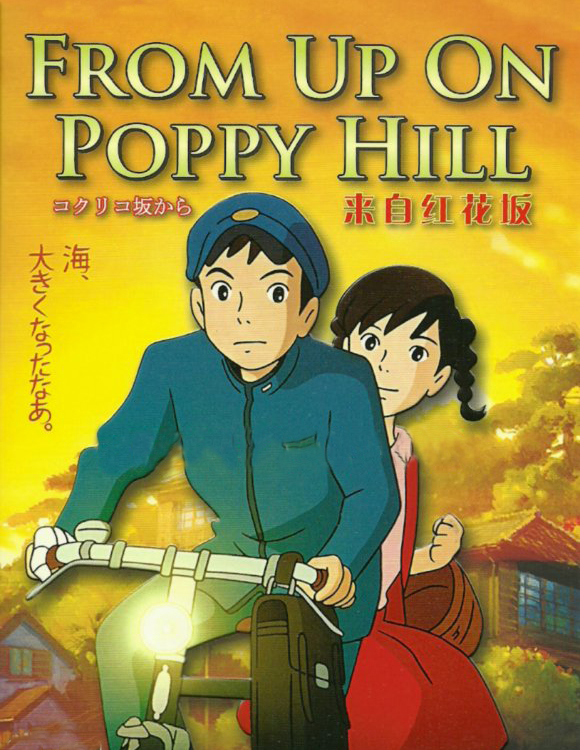
The Wind Rises
Hayao Miyazaki
Toshio Suzuki
A lifelong love of flight inspires Japanese aviation engineer Jiro Horikoshi, whose storied career includes the creation of the A-6M World War II fighter plane.
2013
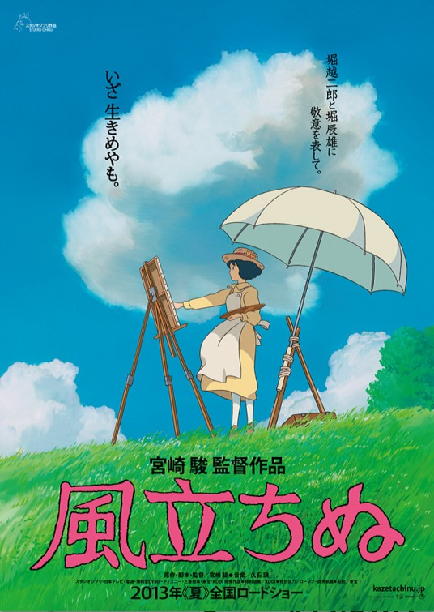
The Tale of the Princess Kaguya
Isao Takahata
Yoshiaki Nishimura
A bamboo cutter named Sanuki no Miyatsuko discovers a miniature girl inside a glowing bamboo shoot. Believing her to be a divine presence, he and his wife decide to raise her as their own, calling her 'Princess'.
2013
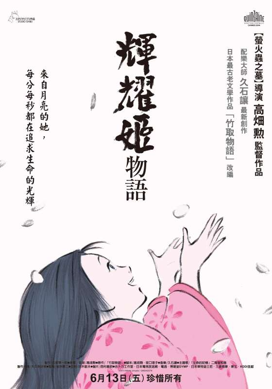
When Marnie Was There
Hiromasa Yonebayashi
Yoshiaki Nishimura
The film follows Anna Sasaki living with her relatives in the seaside town. Anna comes across a nearby abandoned mansion, where she meets Marnie, a mysterious girl who asks her to promise to keep their secrets from everyone. As the summer progresses, Anna spends more time with Marnie, and eventually Anna learns the truth about her family and foster care.
2014
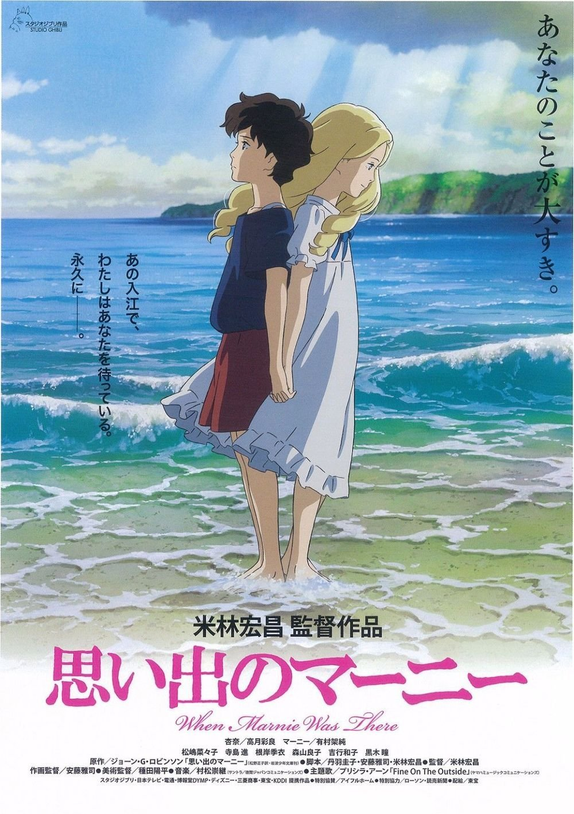